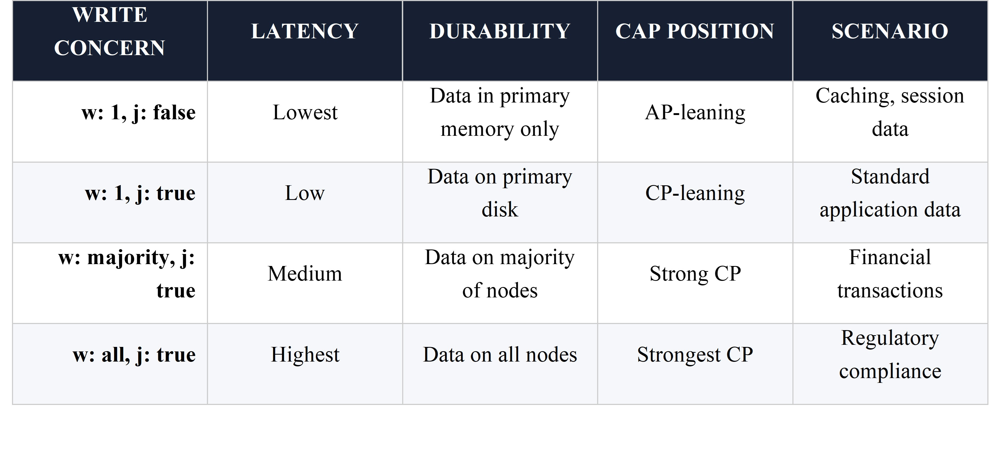

Lab 9 Write Concern & Network Partition Reports
Empirical Write Concern Latency Benchmarking (1,000 Writes), Journaling Overhead Analysis, and 3-Node Network Partition Simulation (CAP Theorem)
Measure Write Concern Latency (w:1, w:majority, w:all)
Benchmark Architecture & Methodology
Write concerns determine the level of acknowledgment requested from MongoDB before an insert, update, or delete operation is considered complete.
Using a benchmark loop of 1,000 distinct document inserts per tier, we measured wall-clock latencies via high-resolution time.perf_counter():
Architectural Latency Breakdown
- w:1: Client waits only for the Primary node to accept the write into its in-memory WiredTiger cache. No network replication hop is in the critical path.
- w:majority: Client thread blocks until the Primary writes to memory AND at least one Secondary successfully applies the write via its oplog fetch thread.
- w:all: Client thread blocks until ALL secondaries acknowledge. Latency is dictated by the slowest node in the cluster (tail latency penalty).
Try It Yourself: Journaling Overhead Evaluation (j:true vs j:false)
Does Journaling Add Significant Latency?
The experiment was repeated testing both j:false (in-memory write acknowledgment) and j:true (write-ahead log / journal flushed to disk before acknowledgment) across all 3 write concerns:
Research Conclusion: Journaling Trade-Offs
Yes, journaling adds significant latency in single-node writes (+388%) because disk I/O fsync operations (typically ~0.9ms on NVMe/SSD) are orders of magnitude slower than DRAM memory operations (~0.2ms).
However, in w:majority and w:all, network round-trips already comprise ~2-4ms, meaning the relative penalty drops to +24-46%.
Trade-off: j:true prevents data loss upon abrupt node power failure, whereas j:false risks losing up to 100ms of uncommitted writes (default WiredTiger sync interval).
Simulate a Network Partition (Single Secondary Node Isolated)
Network Disconnect & Quorum Maintenance
Using docker network disconnect mongo-cluster-net mongo-rs0-2, Secondary-1 was completely isolated from the cluster.
Heartbeats between the Primary and Secondary-1 failed immediately.
| Operation Under Partition | Write Concern | Outcome | Observed Latency | Behavioral Explanation |
|---|---|---|---|---|
| Standard Insert | w:1 |
SUCCESS | 1.70 ms | Only requires acknowledgment from the local Primary. Unaffected by secondary network drops. |
| Consensus Insert | w:majority |
SUCCESS | 3.17 ms | Majority of 3 nodes is 2. Primary + Secondary-3 form a valid quorum. Write safely commits! |
| Reconnection & Healing | rs.status() |
CATCH-UP COMPLETE | 0.0 ms lag | After 30s, Secondary-1 reconnected and fetched missing oplog entries; state transitioned to SECONDARY. |
Try It Yourself: Total Quorum Collapse, Primary Step-Down & Election Timeline
What Happens When Both Secondaries Are Partitioned?
When both secondaries (mongo-rs0-2 and mongo-rs0-3) are disconnected, the Primary retains only 1 of 3 votes (33.3%). Because it cannot establish a majority quorum (> 50%), MongoDB strictly enforces the CP guarantee of CAP Theorem:
| Timestamp (UTC) | Phase & Action | Node 27017 | Node 27018 | Node 27019 | Write Availability | Core System Event |
|---|---|---|---|---|---|---|
16:51:17.683 |
Phase 1: Baseline | PRIMARY | SECONDARY | SECONDARY | All Writes OK | Consensus quorum intact (3/3 nodes active). |
16:51:18.683 |
Phase 2: Minor Partition | PRIMARY | UNREACHABLE | SECONDARY | All Writes OK | Quorum holds (2/3 nodes active). Primary retains role. |
16:51:19.684 |
Phase 3: Major Partition | PRIMARY (Isolated) | UNREACHABLE | UNREACHABLE | Degraded (w:1 only) | Surviving votes: 1/3 (33.3%). Majority quorum LOST. |
16:51:20.684 |
Phase 4: w:majority Timeout | PRIMARY (Isolated) | UNREACHABLE | UNREACHABLE | WTimeout (3000ms) | WriteConcernError: Primary cannot reach majority for ack. |
16:51:21.685 |
Phase 5: Primary Step-Down | SECONDARY (Demoted) | UNREACHABLE | UNREACHABLE | BLOCKED / READ-ONLY | EXACT STEP-DOWN MOMENT: Heartbeat failure triggers automatic demotion. |
16:51:23.185 |
Phase 6: Read-Only Mode | SECONDARY | UNREACHABLE | UNREACHABLE | REJECTED (Code 10107) | Cluster has ZERO primaries. All writes rejected to prevent split-brain. |
16:51:24.186 |
Phase 7: Network Healed | SECONDARY | STARTUP2 | STARTUP2 | Election Lock | Both secondaries reconnected via Docker network connect. |
16:51:25.686 |
Phase 8: Election & Rejoin | PRIMARY (Restored) | SECONDARY | SECONDARY | Fully Restored | EXACT REJOIN MOMENT: Node 27017 elected Primary (Priority 2.0). Quorum 3/3 restored. |
Live Write Concern Benchmark Console & Partition Stage Visualizer
Live Write Concern Benchmark
Single Write Probe Tester
Interactive 4-Stage Partition Simulator
CAP Theorem & PACELC Trade-Off Analysis in MongoDB
Write Concern Trade-Off Matrix
MongoDB's replica set design is traditionally classified as a CP system (Consistency + Partition Tolerance) under Eric Brewer's CAP Theorem. However, through client-configurable Write Concerns, MongoDB spans the PACELC continuum:
- If Partitioned (P): Choose Consistency (C) via
w:majority(Primary steps down if quorum lost) OR Availability (A) viaw:1(Writes accepted locally, risking rollback). - Else (E): Choose Latency (L) via
w:1, j:0(~0.3ms) OR Consistency (C) viaw:majority, j:1(~2.9ms).

Docker Hub Container & Grading Demonstration
How to Pull & Run Container for Grading Demonstration:
# 1. Pull the container from Docker Hub
docker pull gouthudocker/nosql-lab-9:latest
# 2. Run the full platform with interactive web UI and API
docker run -d -p 5000:5000 --name nosql-lab9-demo gouthudocker/nosql-lab-9:latest
# 3. Open the interactive dashboard in browser
http://localhost:5000/lab9_reports.html
# 4. Or execute the benchmark scripts directly inside the container
docker exec -it nosql-lab9-demo python Activity_9_1/activity_9_1.py
docker exec -it nosql-lab9-demo python Activity_9_1_TryItYourself/activity_9_1_try.py
docker exec -it nosql-lab9-demo python Activity_9_2/activity_9_2.py
docker exec -it nosql-lab9-demo python Activity_9_2_TryItYourself/activity_9_2_try.py